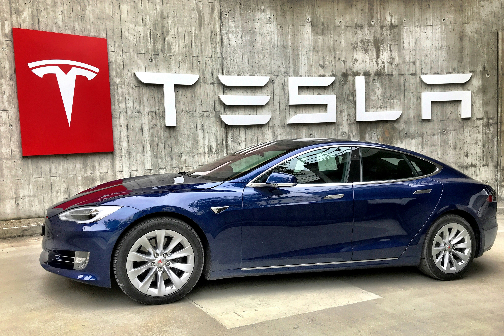

Sedan kompak yang terjangkau dan merupakan mobil Tesla paling laris. Tersedia dalam varian Standard Range Plus dan Long Range. Memiliki desain yang sporty dan minimalis dengan interior yang ramping. Mampu melaju dari 0-100 km/jam dalam waktu kurang dari 5 detik pada varian Long Range.
Sedan kompak yang terjangkau dan merupakan mobil Tesla paling laris. Tersedia dalam varian Standard Range Plus dan Long Range. Memiliki desain yang sporty dan minimalis dengan interior yang ramping. Mampu melaju dari 0-100 km/jam dalam waktu kurang dari 5 detik pada varian Long Range.
SUV premium dengan pintu gull-wing yang unik dan ruang kabin yang luas. Tersedia dalam varian Long Range dan Plaid. Memiliki kemampuan Autopilot yang canggih dan sistem falcon-wing doors yang unik. Mampu melaju dari 0-100 km/jam dalam waktu kurang dari 3 detik pada varian Plaid
Model Y adalah SUV elektrik kompak Tesla yang diluncurkan pada tahun 2020. Mobil ini dirancang untuk menjadi lebih terjangkau dan mudah diakses daripada Model X. Model Y tersedia dalam beberapa varian, termasuk Long Range, Performance, dan Long Range AWD..